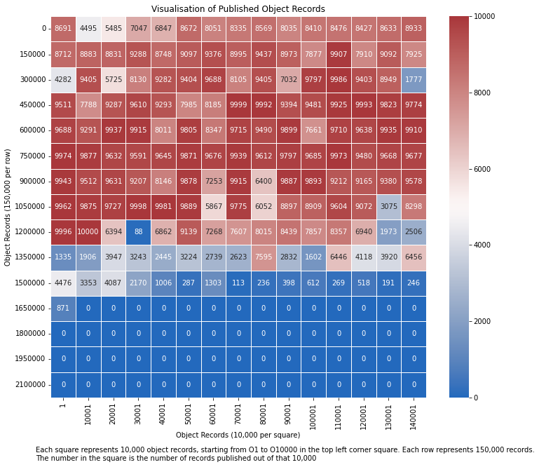

Published Object Records¶
This graph shows how many object records are published online. Each square represents 10,000 object records, each row counts 150,000 object records. The top left square starts the count from object record O1.
# Draw heatmap
df = pd.DataFrame()
x_axis = []
y_axis = []
for i in range(1, 16):
for j in range(1, 16):
x = (j-1)*10000 + 1
y = (i-1)*150000
x_axis.append(x)
y_axis.append(y)
# For some reason this is inverted
df = pd.DataFrame(data={'Object Records (150,000 per row)': y_axis, 'Object Records (10,000 per square)': x_axis, 'Data': identifier_bins})
objects = df.pivot("Object Records (150,000 per row)", "Object Records (10,000 per square)", "Data")
# Draw a heatmap with the numeric values in each cell
f, ax = plt.subplots(figsize=(12, 10))
ax.set_title("Visualisation of Published Object Records")
f.text(.1,0, "Each square represents 10,000 object records, starting from O1 to O10000 in the top left corner square. Each row represents 150,000 records.\nThe number in the square is the number of records published out of that 10,000")
heatmap = sns.heatmap(objects, annot=True, fmt="d", linewidths=.5, ax=ax, cmap='vlag')
